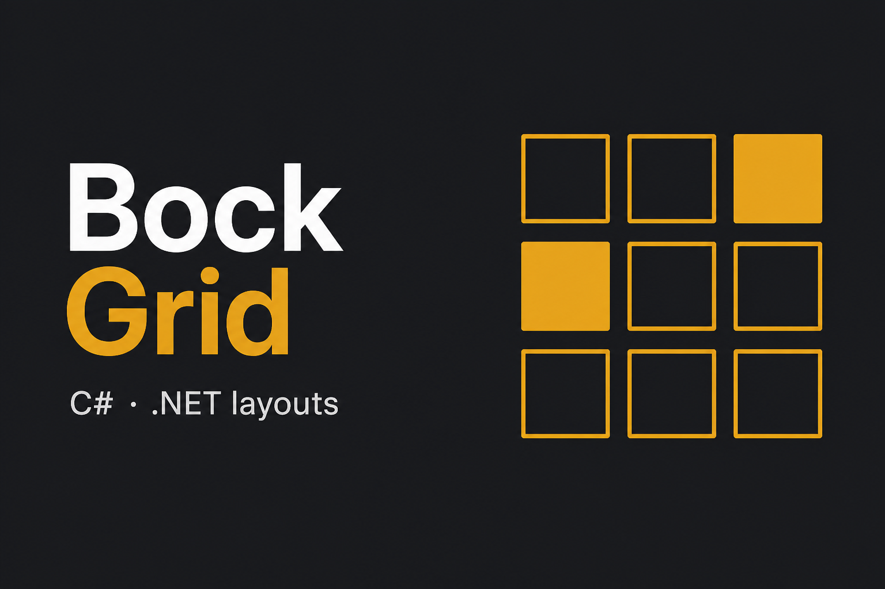

- Umbraco
- JavaScript
- C#
Block Field Visibility
Umbraco package that hides or shows Block List fields in the backoffice so editors only see what they need.
Real Umbraco, .NET, and community work from Usome, ZAAKS!, and GitHub
Umbraco package that hides or shows Block List fields in the backoffice so editors only see what they need.

